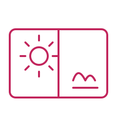
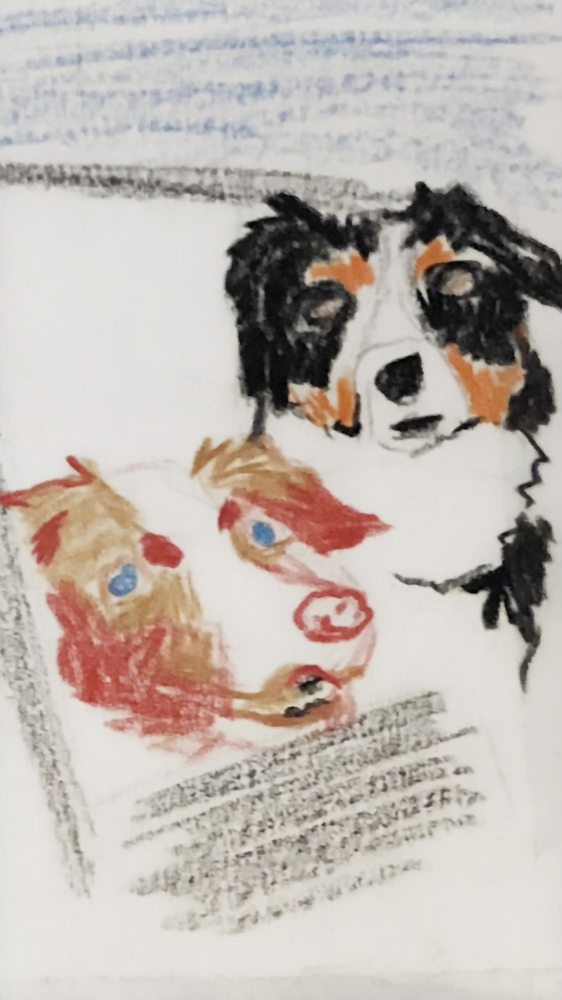
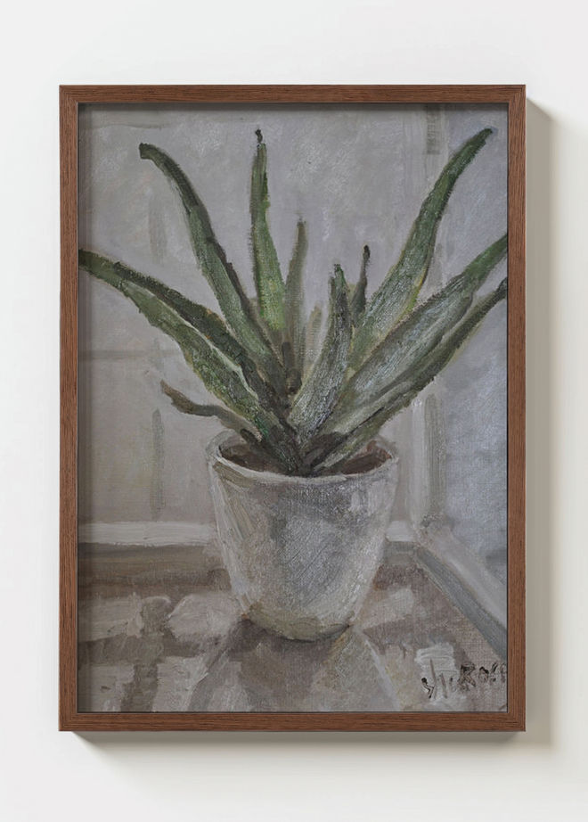

Our Programs
Three age-based tracks, each capped at 6 students, designed to grow with your child's artistic development.

Visual Discovery
Learn to See · Explore · Create
Cultivate observation, creativity, and artistic appreciation.
- Observation & Visual Thinking
- Drawing & Painting
- Shape, Color & Composition
- Theme-Based Art Projects
- Inspired by the Masters
- Mixed Media Exploration
- Nature Journaling
Creative Foundations
Observe · Build · Express
Strengthen observational drawing, technical skills, and visual expression.
- Drawing Fundamentals
- Plaster Cast Studies (Introduction)
- Light & Shadow
- Perspective
- Still Life Drawing
- Painting Foundations
- Color Theory
- Personal Projects


Portfolio Studio
Develop · Refine · Express
Develop an individual artistic voice while preparing a competitive portfolio for college admission.
- Advanced Drawing
- Creative Drawing
- Plaster Cast Studies
- Pre-Portfolio Development
- Portfolio Development
- Personal Projects
- One-on-One Portfolio Mentoring Available